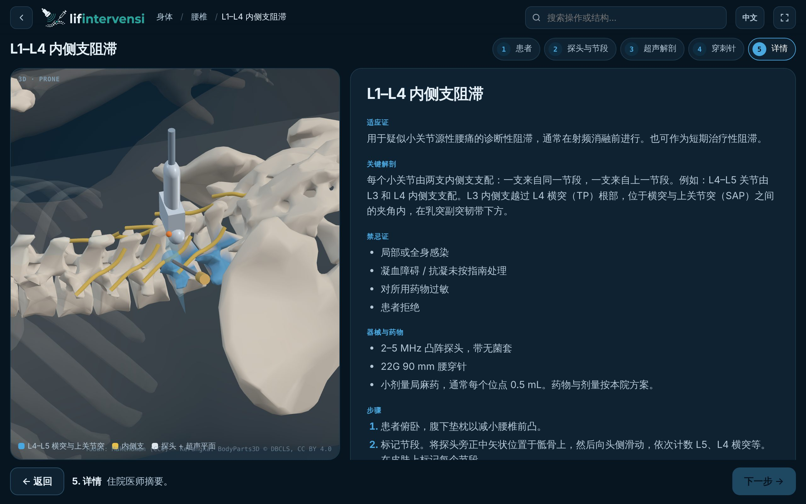
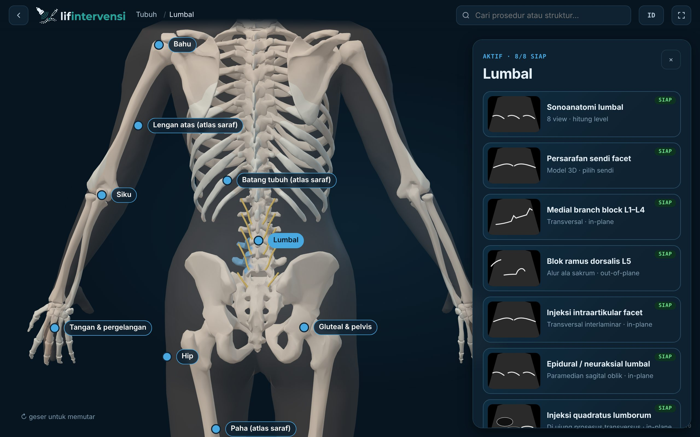
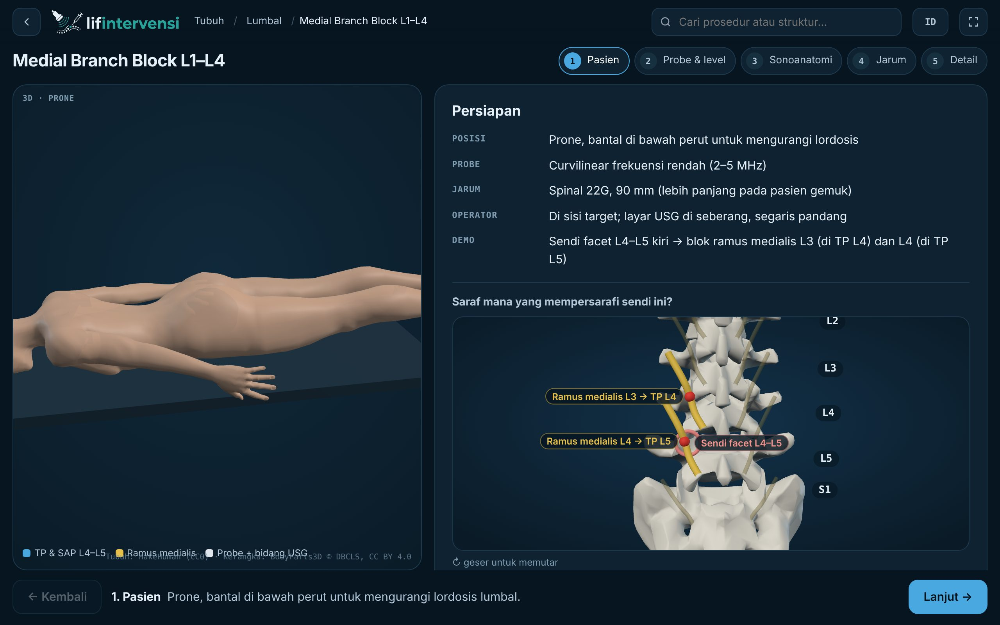
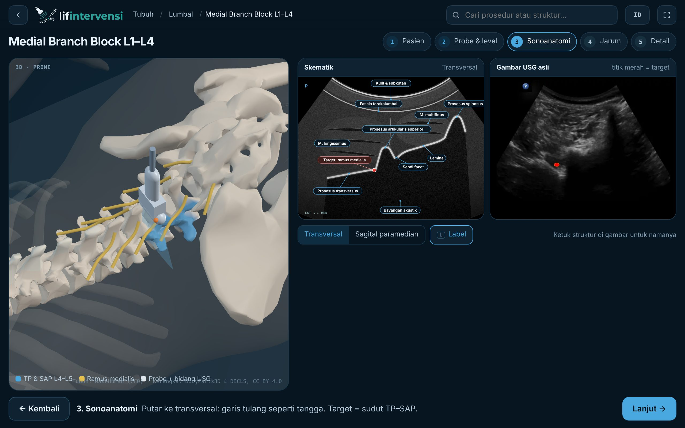
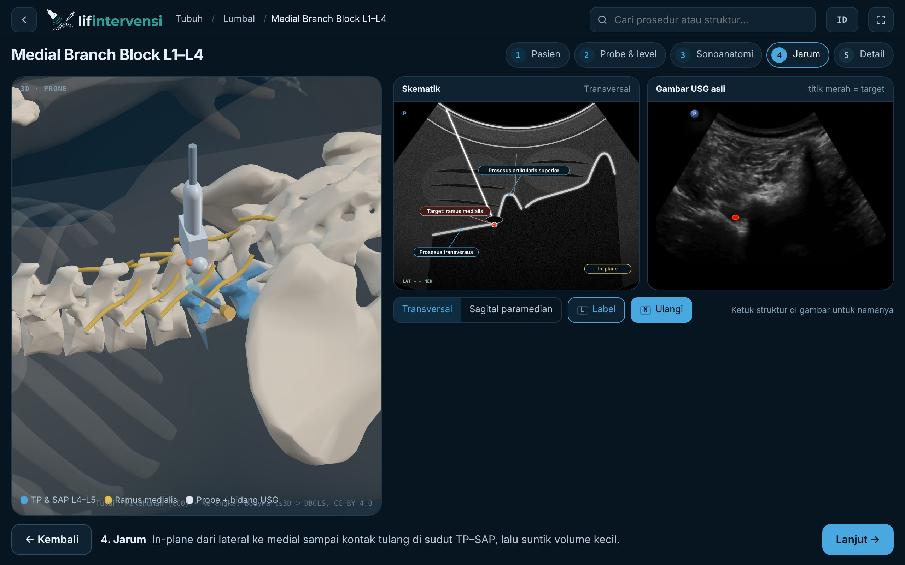
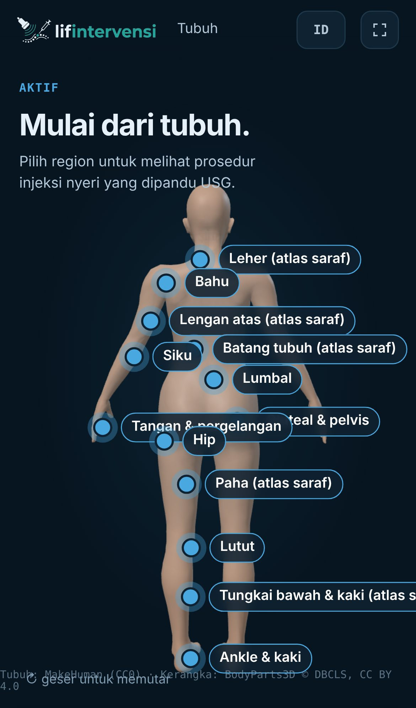
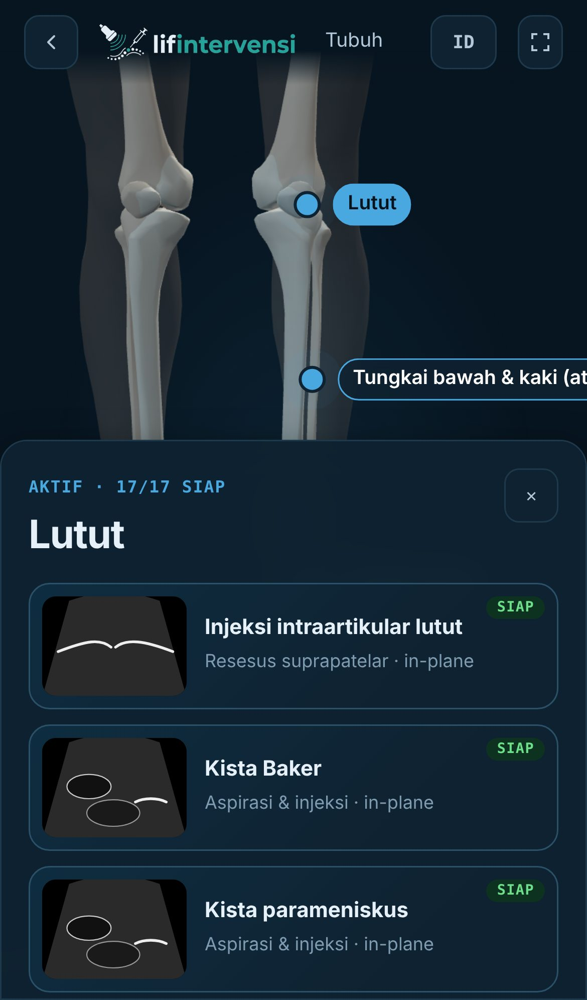
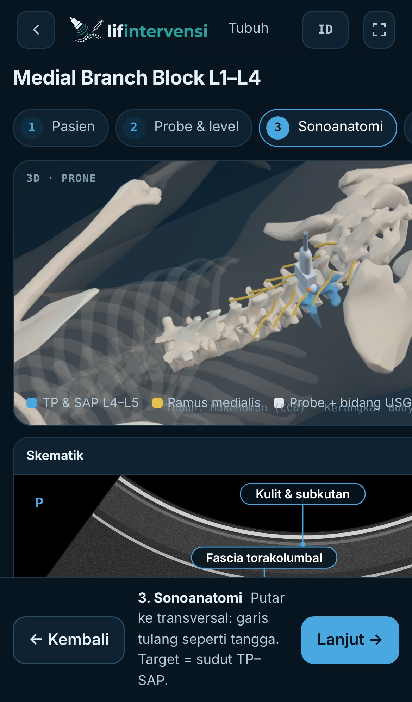

| Judul ciptaan | Lif Intervensi — Atlas Injeksi Nyeri Dipandu USG |
| Jenis ciptaan | Program Komputer |
| Lampiran | Cara Penggunaan (Panduan Pengguna) |
| Pencipta | [Nama Pencipta] |
| Pemegang hak cipta | [Nama Pemegang Hak Cipta] |
| Tanggal & tempat pertama kali diumumkan | [Tanggal], [Kota] |
| Bentuk program | Aplikasi web satu halaman (single-page web application) dalam satu berkas index.html; berjalan di peramban (browser) desktop maupun ponsel tanpa instalasi |
| Bahasa pemrograman | HTML5, CSS3, JavaScript (ECMAScript 2020), SVG, WebGL melalui pustaka three.js |
Lif Intervensi adalah atlas interaktif injeksi nyeri dan blok saraf yang dipandu ultrasonografi (USG). Pengguna memilih bagian tubuh pada model 3D, lalu mempelajari setiap prosedur melalui lima langkah: posisi pasien, penempatan probe, sonoanatomi, teknik jarum, dan ringkasan. Saat ini tersedia 13 region dengan 211 topik prosedur, dalam bahasa Indonesia, Inggris, Cina dan Uzbek.
index.html secara langsung.


Klik kartu prosedur pada panel region (atau hasil pencarian). Halaman prosedur terbuka di Langkah 1: Pasien.
Baca tabel persiapan: posisi pasien, jenis probe, jarum, posisi operator dan contoh kasus. Pada prosedur sendi facet tersedia penampil 3D mini; klik level sendi (L1–L2 … L5–S1) untuk melihat saraf yang mempersarafinya.

Klik Lanjut. Model 3D menunjukkan letak dan arah probe beserta bidang pindainya. Bandingkan sonogram skematik dengan gambar USG asli; titik merah menandai target.


Animasi menunjukkan jalur jarum (in-plane atau out-of-plane) menuju target pada sonogram dan model 3D. Klik Ulangi atau tekan N untuk memutar ulang.

Baca ringkasan: indikasi, anatomi kunci, kontraindikasi, alat & obat dan urutan tindakan. Ini langkah terakhir; tombol Lanjut tidak aktif.

Klik ikon layar penuh di kanan atas atau tekan F. Tekan lagi (atau Esc peramban) untuk keluar.
Alamat di peramban berubah mengikuti halaman yang dibuka, misalnya #/r/lumbal (region) atau #/p/mbb/3 (prosedur, langkah 3). Salin alamat tersebut untuk menandai atau membagikan halaman tertentu.



Cara pakai sama dengan desktop: ketuk titik region, ketuk kartu prosedur, gulir halaman prosedur ke bawah, dan pakai tombol Kembali / Lanjut di bagian bawah layar.
| Tombol | Fungsi | Berlaku di |
|---|---|---|
| → | Langkah berikutnya | Halaman prosedur |
| ← | Langkah sebelumnya | Halaman prosedur |
| L | Tampilkan / sembunyikan label | Halaman prosedur |
| N | Putar ulang animasi jarum | Halaman prosedur |
| Esc | Kembali satu tingkat; mengosongkan pencarian | Semua |
| F | Layar penuh | Semua |
Untuk mengakhiri, cukup tutup tab atau jendela peramban. Aplikasi tidak menyimpan data pribadi; yang diingat hanya pilihan bahasa pada perangkat pengguna.